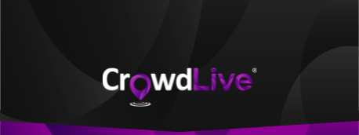

<ion-header>
  <ion-toolbar style="position: relative;">
    
    <ion-row class="header_content">
      <ion-col size="2" class="centerall"
        >
      </ion-col>
      <ion-col size="8" class="centerall">
      </ion-col>
      <ion-col class="centerall" size="2">
        
      </ion-col>
    </ion-row>
  </ion-toolbar>
</ion-header>

<ion-content style="--background: #262626">
  <ion-refresher slot="fixed" (ionRefresh)="handleRefresh($event)">
    <ion-refresher-content></ion-refresher-content>
  </ion-refresher>
  <ion-row class="visitors">
    <ion-col size="4" *ngFor="let opt of visitorArr">
      <div class="mainDiv" >
        

        <p class="uname roboto">{{opt.username}}</p>
      </div>
    </ion-col>
  </ion-row>
</ion-content>